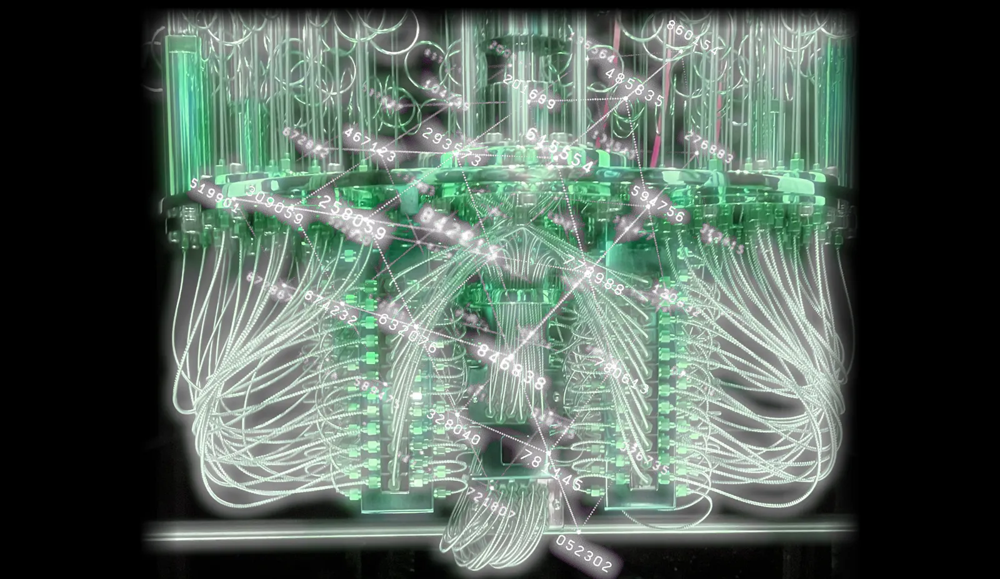

The Noise Floor of Revolt — glowing machine schematic
It hits as an evidence shot of a living computational machine: dark field, toxic green glow, dense cable topology, and numeric overlays turning hardware into an almost ritual schematic.
Source article: “The Noise Floor of Revolt” by Harry Halpin on Diffractions Collective.
luminous green on blackdense symmetrical cable tanglenumber labels as technical ritualx-ray/holographic transparencylab hardware as occult machine